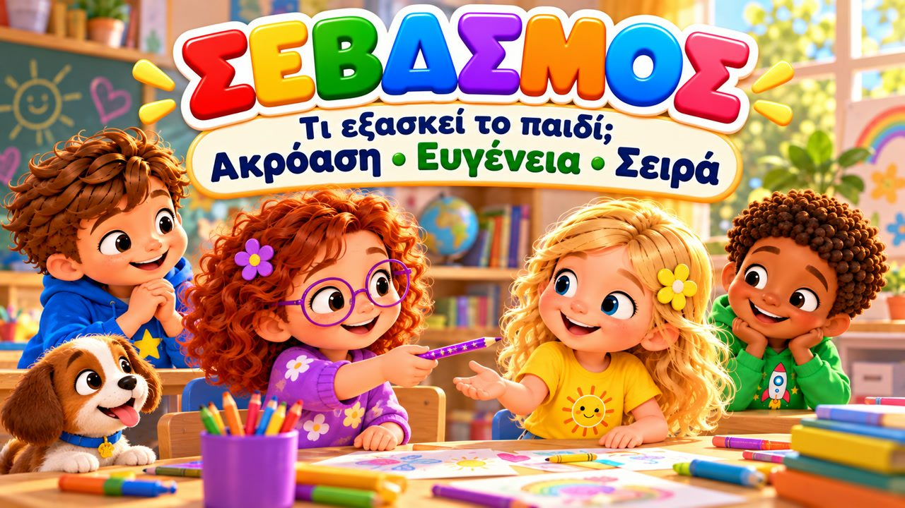
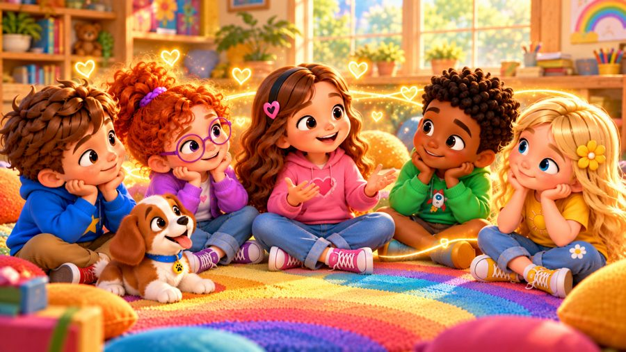
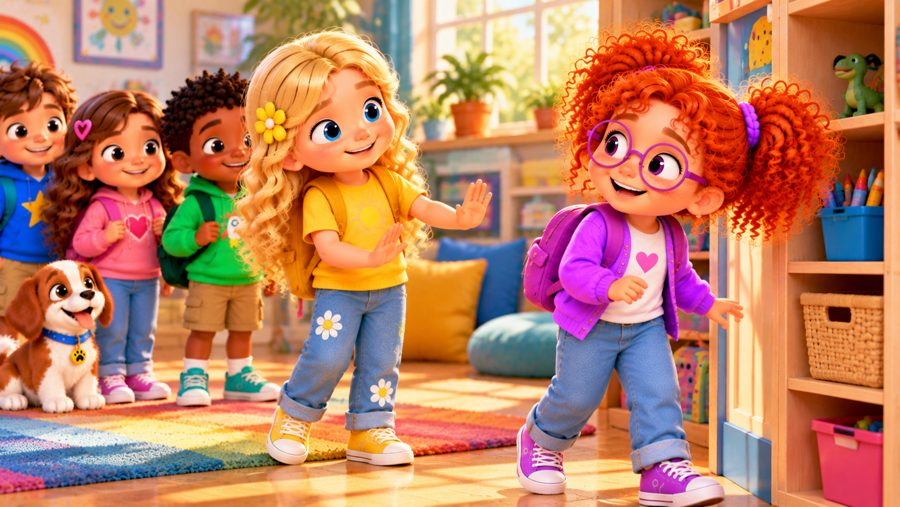
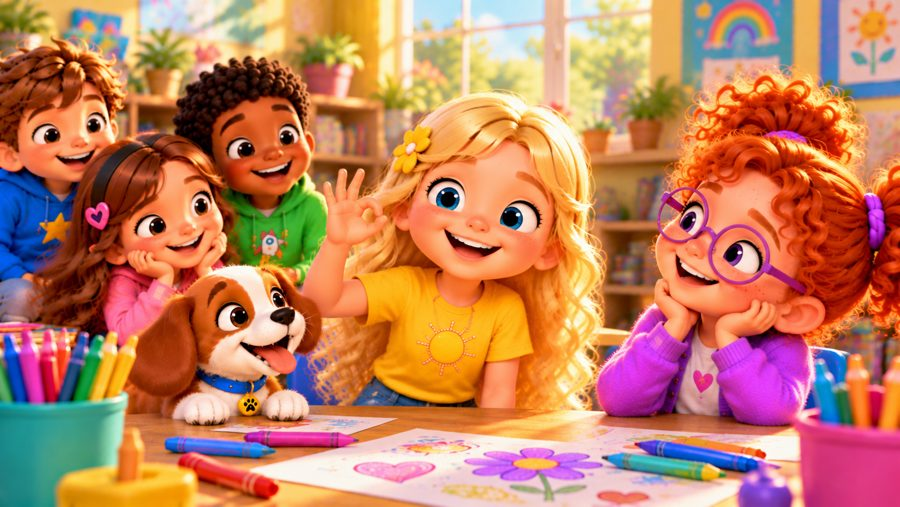
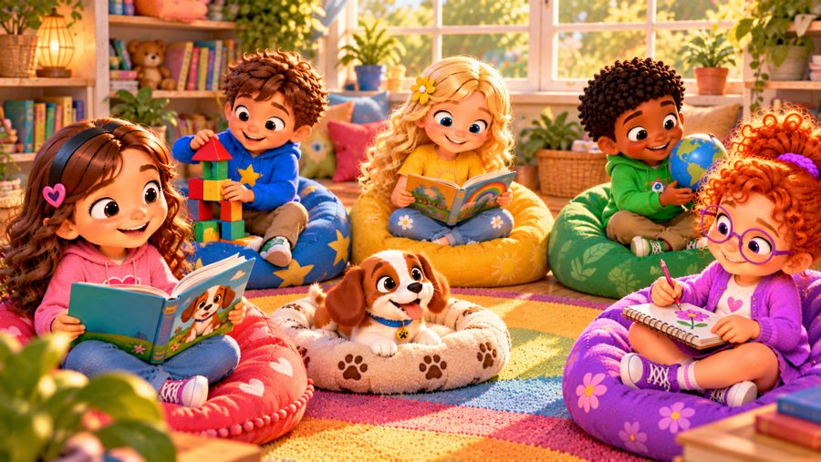

Σέβομαι τους άλλους!
Ένα τραγούδι για τον σεβασμό! 💚 Τραγουδήστε με τον Μαξ, τη Μία, τον Τζέι, τη Λίλη, τη Ρόζα και τον σκυλάκο Μπάντι, που μαθαίνουν πώς φαίνεται ο σεβασμός κάθε μέρα: ακούμε όταν μιλάει ο άλλος, περιμένουμε τη σειρά μας, ρωτάμε πριν πάρουμε κάτι και αφήνουμε χώρο σε όποιον τον χρειάζεται.
Στο «Σέβομαι τους άλλους!» ο Μαξ περιμένει τη σειρά του για να πει την ιδέα του, η Λίλη ρωτά πριν πάρει το λαμπερό στυλό της Ρόζας — και λέει «εντάξει» όταν η Ρόζα απαντά «όχι ακόμα» — κι οι φίλοι αφήνουν στον Τζέι λίγο χώρο. Με στίχους-καραόκε στην οθόνη, για παιδιά 3–8 ετών, στο σπίτι, στο νηπιαγωγείο και στα Εργαστήρια Δεξιοτήτων.

▶💡 Γιατί είναι σημαντικό: Σεβασμός
Σεβασμός σημαίνει να ακούμε, να περιμένουμε τη σειρά μας, να ρωτάμε πριν πάρουμε κάτι και να φερόμαστε στους άλλους όπως θέλουμε να μας φέρονται. Κάνει την τάξη πιο ήρεμη, τις φιλίες πιο δυνατές και βοηθά τα παιδιά να νιώθουν κι αυτά σεβαστά. Δείξτε σεβασμό στις μικρές καθημερινές στιγμές — πείτε «παρακαλώ» και «ευχαριστώ» και ακούστε με προσοχή όταν σας μιλά το παιδί.
👨👩👧 Τι μαθαίνει το παιδί
- Να ακούει όταν μιλάει κάποιος άλλος
- Να περιμένει τη σειρά του
- Να ρωτά πριν πάρει κάτι — και να δέχεται ένα ευγενικό «όχι»
- Να σέβεται τον χώρο των άλλων
- Ότι είμαστε όλοι διαφορετικοί και όλοι αξίζουμε σεβασμό
💬 Κουβέντα μετά το τραγούδι
- Πώς δείχνω σε κάποιον ότι τον ακούω;
🏅 Κουίζ & Πτυχίο
Είδατε το τραγούδι μαζί; Τώρα διαβάστε στο παιδί κάθε ερώτηση — το παιδί δείχνει τη σωστή εικόνα. Αν απαντήσει και στις 6 ερωτήσεις, κερδίζει ένα πτυχίο για εκτύπωση!
🔒 Το όνομα χρησιμοποιείται μόνο για να φτιαχτεί το πτυχίο στη συσκευή σας. Δεν αποθηκεύουμε και δεν στέλνουμε τίποτα.
Τα κατάφερες! 🎉
Και οι 6 απαντήσεις είναι σωστές! Γράψτε το όνομα του παιδιού για να φτιαχτεί το πτυχίο.
🖨️ Δωρεάν εκτυπώσιμα
Δωρεάν για χρήση στο σπίτι και στην τάξη. Εκτυπώστε σε χαρτί Α4.
🖼️ Σκηνές από το τραγούδι






🎵 Κι άλλα τραγούδια


🎤 Στίχοι – Σέβομαι τους άλλους!
Εσύ είσαι εσύ,
κι εγώ είμαι εγώ!
Μπορεί να είμαστε διαφορετικοί,
κι αυτό είναι μια χαρά!
Ακούω,
προσέχω,
φέρομαι καλά...
Δείχνω σεβασμό
κάθε μέρα, παντού!
Η Μία μιλούσε στην παρέα,
κι ο Μαξ είχε κάτι να πει.
Πήγε να μιλήσει κι αυτός μαζί της,
μα σταμάτησε εκεί.
Περίμενε λίγο τη σειρά του
κι άκουσε με προσοχή.
Κι όταν η Μία τελείωσε,
είπε: «Να πω κι εγώ κάτι;»
Όλοι άκουσαν τον Μαξ,
όπως άκουσαν και τη Μία.
Όταν ακούμε ο ένας τον άλλο,
δείχνουμε σεβασμό!
Όταν μιλάς,
σε ακούω εγώ.
Όταν έρθει η σειρά μου,
θα μιλήσω κι εγώ.
Μιλάω ήρεμα,
φέρομαι καλά.
Ο σεβασμός φαίνεται
σε πράγματα μικρά!
Σε ακούω!
Σε προσέχω!
Σε σέβομαι!
Κι όπως θέλω να με σέβεσαι,
σε σέβομαι κι εγώ!
Περιμένω τη σειρά μου!
Ρωτάω πριν το πάρω!
Κι αν χρειάζεσαι τον χώρο σου,
λίγο πίσω θα σταθώ!
Καλά λόγια!
Καλά χέρια!
Καλές επιλογές!
Δείχνουμε σεβασμό
με πράξεις καθημερινές!
Εσύ είσαι εσύ!
Κι εγώ είμαι εγώ!
Και κάθε μέρα
δείχνω σεβασμό!
Η Λίλι είδε το στυλό της Ρόζι,
λαμπερό και όμορφο πολύ.
Ήθελε αμέσως να το πάρει,
μα σταμάτησε στη στιγμή.
«Ρόζι, μπορώ να το χρησιμοποιήσω;»
Κι εκείνη είπε:
«Όχι ακόμα.»
Η Λίλι είπε:
«Εντάξει!
Θα πάρω ένα άλλο τώρα.»
Λίγο μετά ο Τζέι καθόταν
και ήθελε λίγο χώρο μόνος.
Οι φίλοι του το κατάλαβαν
και του άφησαν λίγο χώρο.
Μπορώ να ρωτήσω.
Μπορώ να ακούσω.
Μπορώ να δεχτώ και το «όχι».
Γιατί όταν σέβομαι τους άλλους,
δείχνω πως νοιάζομαι πολύ!
Όταν μιλάς,
σε ακούω εγώ.
Όταν έρθει η σειρά μου,
θα μιλήσω κι εγώ.
Μιλάω ήρεμα,
φέρομαι καλά.
Ο σεβασμός φαίνεται
σε πράγματα μικρά!
Σε ακούω!
Σε προσέχω!
Σε σέβομαι!
Κι όπως θέλω να με σέβεσαι,
σε σέβομαι κι εγώ!
Περιμένω τη σειρά μου!
Ρωτάω πριν το πάρω!
Κι αν χρειάζεσαι τον χώρο σου,
λίγο πίσω θα σταθώ!
Καλά λόγια!
Καλά χέρια!
Καλές επιλογές!
Δείχνουμε σεβασμό
με πράξεις καθημερινές!
Εσύ είσαι εσύ!
Κι εγώ είμαι εγώ!
Και κάθε μέρα
δείχνω σεβασμό!
Κάποιος μιλάει;
ΤΟΝ ΑΚΟΥΩ!
Θέλω κάτι που δεν είναι δικό μου;
ΡΩΤΑΩ!
Μου λέει «όχι»;
ΤΟ ΣΕΒΟΜΑΙ!
Θέλει λίγο χώρο;
ΚΑΝΩ ΠΙΣΩ!
Περιμένω τη σειρά μου;
ΝΑΙ, ΜΠΟΡΩ!
Έχει άλλη γνώμη;
ΤΗΝ ΑΚΟΥΩ!
Είναι διαφορετικός από μένα;
ΔΕΝ ΠΕΙΡΑΖΕΙ!
Πώς φερόμαστε στους άλλους;
ΜΕ ΣΕΒΑΣΜΟ!
Δεν χρειάζεται
να είμαστε ίδιοι.
Δεν χρειάζεται
να μας αρέσουν τα ίδια.
Εσύ μπορεί να σκέφτεσαι αλλιώς,
κι εγώ διαφορετικά.
Μπορούμε όμως
να ακούμε ο ένας τον άλλο.
Τα δικά σου συναισθήματα
είναι σημαντικά.
Και τα δικά μου
είναι σημαντικά.
Ο δικός σου χώρος
είναι σημαντικός.
Και ο δικός μου το ίδιο.
Σεβασμός σημαίνει:
«Εγώ έχω αξία...
κι εσύ έχεις αξία!»
Σε ακούω!
Σε προσέχω!
Σε σέβομαι!
Κι όπως θέλω να με σέβεσαι,
σε σέβομαι κι εγώ!
Περιμένω τη σειρά μου!
Ρωτάω πριν το πάρω!
Κι αν χρειάζεσαι τον χώρο σου,
λίγο πίσω θα σταθώ!
Καλά λόγια!
Καλά χέρια!
Καλές επιλογές!
Δείχνουμε σεβασμό
με πράξεις καθημερινές!
Άλλες σκέψεις!
Άλλες φωνές!
Διαφορετικές επιλογές!
Μπορούμε να σεβόμαστε
τις διαφορές μας κάθε μέρα!
Σε ακούω!
Σε προσέχω!
Σε σέβομαι!
Εσύ είσαι εσύ!
Κι εγώ είμαι εγώ!
Και όλοι αξίζουμε
σεβασμό!
Ακούω.
Ρωτάω.
Περιμένω.
Νοιάζομαι.
Με μικρές πράξεις
κάθε μέρα...
δείχνω σεβασμό!